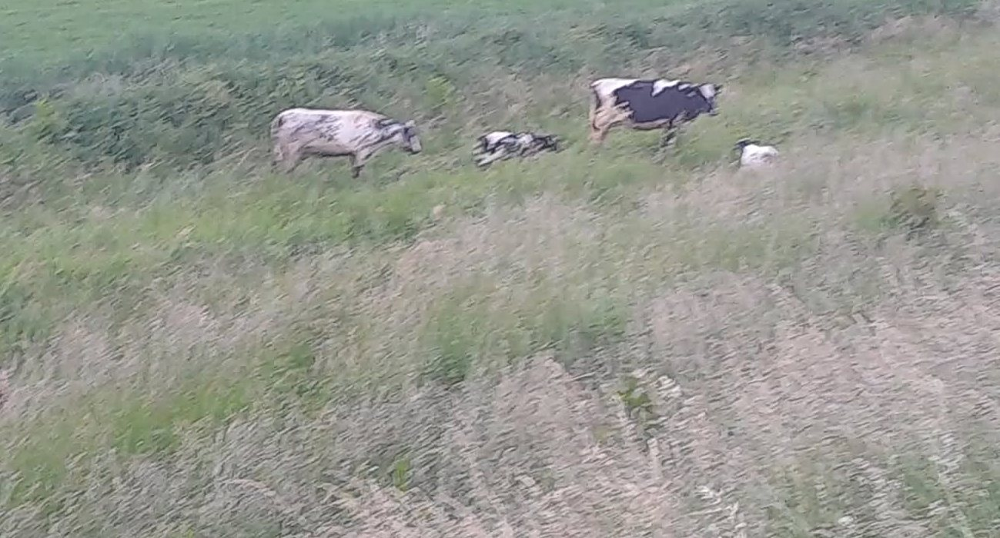
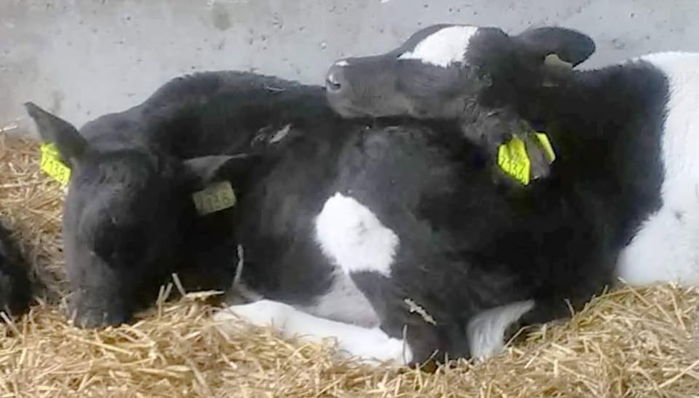
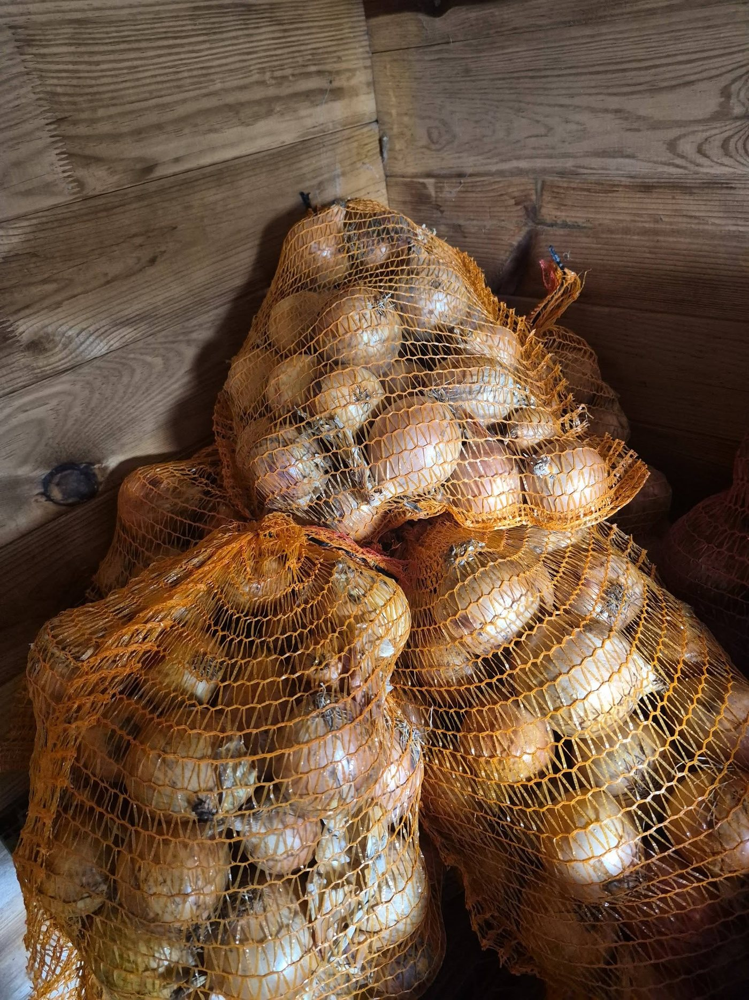
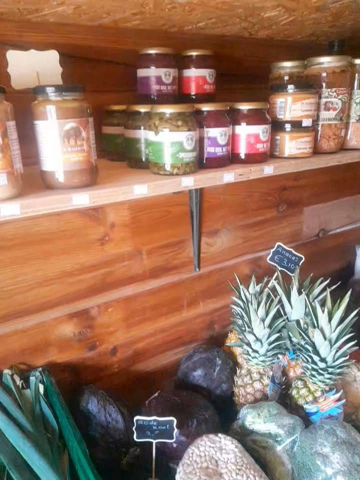
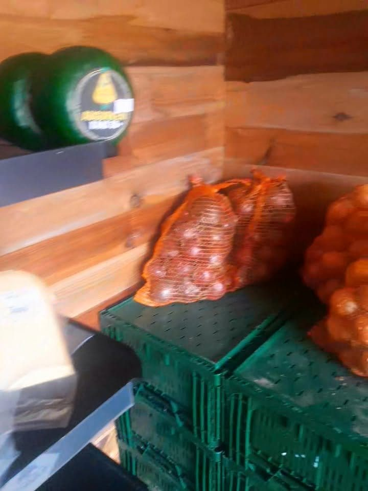

Eigen vlees
Rund, varken en kip, met zorg grootgebracht op onze eigen boerderij. Te koop in de boerderijwinkel.

Ons eigen vlees, aangevuld met producten rechtstreeks van het land en uit de streek.

Rund, varken en kip, met zorg grootgebracht op onze eigen boerderij. Te koop in de boerderijwinkel.

Dag en nacht te halen in ons zelfbedieningshokje op het erf. Van onze aardappelen maak je de lekkerste friet.

Kaas van de boerderij in diverse soorten, honing, jam, mosterd en meer lekkers uit de streek.
Laat het ons weten via WhatsApp of telefoon. Dan hebben we alles voor u op voorraad en ligt het klaar als u komt.

Op het erf aan de Schenkeldijk staat ons zelfbedieningshokje. Daar haalt u dag en nacht verse aardappelen, uien, eieren, groente en kaas van de boerderij. Betalen kan contant of met QR.
Voor ons eigen vlees bent u welkom in de boerderijwinkel.
Kom langs, vul uw tas en proef het verschil van echt vers van het land.
Altena Rund is de boerderij van de familie Tolenaars aan de Schenkeldijk in Nieuwendijk. Op onze eigen boerderij brengen we rund, varken en kip met zorg groot. Het vlees verkopen we in onze eigen boerderijwinkel, zodat u precies weet waar het vandaan komt.
We doen ook graag mee in de streek. Zo bakten kinderen bij ons zelf friet van onze aardappelen tijdens de Kinderdag van de Week van Ons Eten.
Laat weten wat u wilt hebben en wanneer u het komt halen. Dan zetten we het voor u klaar.
U vindt ons aan de Schenkeldijk in Nieuwendijk.